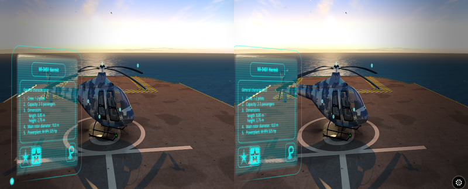
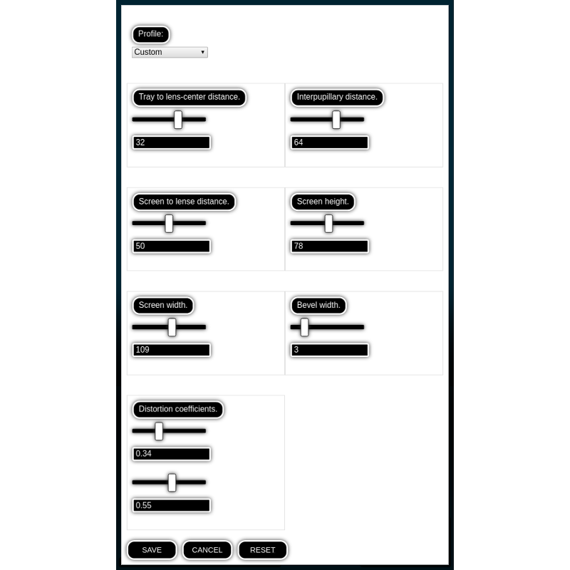

VR and AR¶
Table of Contents
The following chapter describes Virtual Reality (VR) and Augmented Reality (AR) features of the Blend4Web engine and explains the basics of creating applications capable to work with these outstanding technologies.
Virtual Reality¶
There are numerous VR devices, and Blend4Web engine supports many of them. Using VR in a Blend4Web application does not require any specific changes made to the application itself.
立体渲染模式适用于使用特殊眼镜观看的内容。它是应用程序通过API来激活。
Blend4Web supports several techniques of stereo image rendering:
HMD (head-mounted display):

HMD是一个实验性的功能，现在它只能用于 Eye 类型摄像机。
Side-to-side rendering:
{kind=link}
立体图（红/蓝）

激活¶
要使用HMD立体渲染，您需要安装 Oculus 的 运行时工具 (支持两个版本：根目录下的 chromium_webvr_v1_win64.7z 和在 Deprecated API 文件夹下的). Windows和MacOS的二进制格式版本，可以在Oculus公司的网站上找到，而Linux版本应该从源代码进行编译。
就目前而言，HMD的支持在 Chromium实验性版本 和 Firefox 每日版.
要打开立体渲染，你需要选择某些特定选项中的设置，从右边的起第三栏，如图所示。

要让立体渲染正常工作，建议切换到全屏模式。
HMD设置¶
{kind=link}
这组设置允许用户改变各种参数，以调整任何虚拟现实设备，让他们更好地查看某个三维应用程序或场景。有两种方法可以访问这些设置：
- 首先，它可以在 Blend4Web 查看器 应用的 立体视觉面板 下找到。
- 其次，它也可以在使用的应用程序中通过 hmd_conf 模块的 show 方法显示，但这样做需要一些编程。该方法的实例可在
viewer.js和webplayer.js应用程序（在m_hmd_conf对象）中发现。
渲染设置¶
- 托盘镜片中心的距离
此参数指定手机屏幕和摄像机透镜的中心之间的距离。
这个值可以从0到50变化，默认值是32。
- 瞳距
此参数指定用户的眼睛的瞳孔之间的距离。测量单位为毫米。
这个值可以从0到100变化，默认值是64。
- 屏幕到镜片距离
这指定了电话的屏幕和照相机透镜之间的距离。
这个值可以从0到100变化，默认值是50。
- 屏幕高度
屏幕的高度。
这个值可以从0到150变化，默认值是63。
- 屏幕宽度
屏幕的宽度。
这个值可以从0到200变化。缺省值是107。
- 斜面宽
图像周围的边框的厚度。
这个值可以从0到20变化。缺省值是3。
- 失真系数
这样做是为了用于补偿由VR设备透镜产生的图像失真。
这两个值可以从0到1变化，默认值是0.34用于第一参数和0.55用于第二个。
其他控制工具¶
- 保存
- 保存的设置。
- 取消
- 关闭设置界面，不保存设置。
- 恢复
- 恢复默认设置。
Augmented Reality¶
Augmented Reality feature in Blend4Web engine utilizes JavaScript port of the popular AR solution ARToolKit.
In comparison with VR apps, creating an Augmented Reality application is a little more complicated, as the application itself should be properly set up beforehand, and certain hardware requirements have to be met.
System requirements are:
A device with a web camera to run the application.
注解
If your device does not have a web cam, the application will still run, but AR features will not be available.
A web browser with the AR support.
Setting Up¶
Blend4Web SDK features an example of an AR application available in the Project Manager.
注解
This example is not included in the Blend4Web CE Lite
For an AR application to work properly, you will need a marker.
Leap Motion¶
Leap Motion is a controller that can be used for tracking hand movements and gesture recognition. It can be used in conjunction with any supported VR device, or on its own.
Our Code Snippets application contains an example of using Leap Motion controller. If you are planning to develop applications that support the controller, you may want to examine this example thoroughly. You can also use it as a base for your own projects.
Leap Motion API is provided as a standard JavaScript library that can be included in the HTML page of the project. This library can be either included in the project or accessed remotely from Leap Motion's servers.